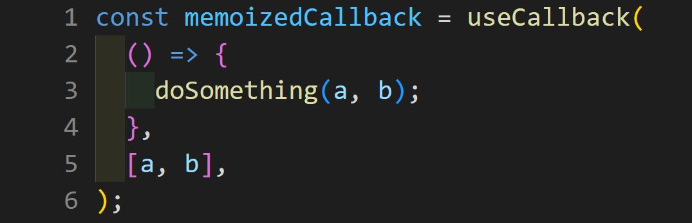

React Hooks
Functional Component vs Class Component

The main purpose of React Hooks is:
to give functions the ability to manage and share state, effects and much more, increasing the potential for extensibility and improving performance
Rules of React Hooks
- only call Hooks at the top level
- only call Hooks from React functions
Why are React Hooks useful?
- easier to test
- easier to read
- closer to traditional JavaScript
- less code-intensive
The most commonly used React Hooks
- useState - for managing states
- useEffect - for managing side-effects like API calls, subscriptions, timers, mutations and more
- useContext - to return the current value for a context
- useReducer - useState alternative to help with complex state management
- useCallback - to return a memorized version of a callback to help a child component not re-render unnecessarily
- useMemo - to return a memorized value that helps in performance optimizations
- useRef - to return a ref object with a 'current' property, which is mainly used to access a child component imperatively
The useState Hook
The useContext Hook
The useEffect Hook
The useReducer Hook
The useCallback Hook
The useMemo Hook
The useRef Hook
Сustom React Hook